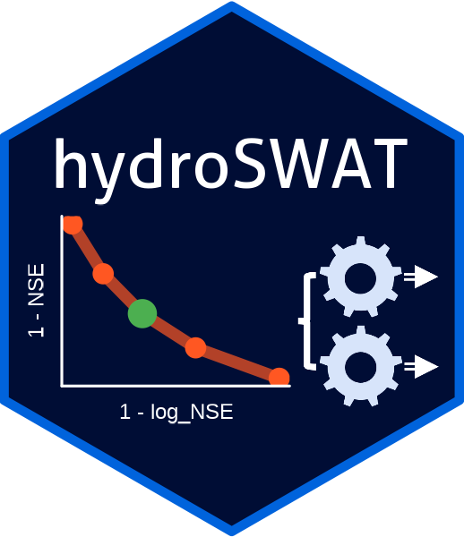

Core features
-
Flexible data preparation: Convert gridded climate inputs into SWAT‑compatible forcing files.
-
Integrated execution: Configure and run SWAT simulations directly from R.
-
Custom calibration objectives: Define objectives across multiple variables, performance metrics, stations, and periods.
-
Advanced multi‑objective calibration: Use the NSGA‑II evolutionary algorithm with full parallelization support.
-
Comprehensive performance evaluation: Access over 20 metrics (e.g., NSE, log‑NSE, KGE, PBIAS).
-
Diagnostic visualizations: Create hydrographs, flow‑duration curves, and seasonal cycle plots.
-
Post‑processing tools: Summarize and analyze SWAT outputs at HRU, subbasin, and river‑reach levels.
- Model compatibility: Support both the standard SWAT model and its tropical variant SWAT‑T, enabling ecohydrological modeling across diverse regions.
📦 Installation
To install the development version of hydroSWAT from GitHub:
# Install 'remotes' if not already installed
install.packages("remotes")
# Install hydroSWAT from GitHub
remotes::install_github("fernandezpalomino/hydroSWAT")
# Load the package
library(hydroSWAT)📘 Example workflow
See the 👉 step‑by‑step calibration vignette or run vignette("calibrating_swat", package = "hydroSWAT") in R.
📖 Documentation
See the 👉 full hydroSWAT documentation — including all function references and the complete calibration workflow vignette.
📄 Citation
To cite hydroSWAT in publications:
citation("hydroSWAT")Current citation:
Fernandez-Palomino, C.A. (2026). hydroSWAT: Tools for multi‑objective calibration and workflows for the SWAT model in R. Available at: https://github.com/fernandezpalomino/hydroSWAT
🤝 Contributing
Feedback, bug reports, and contributions are welcome via GitHub Issues.